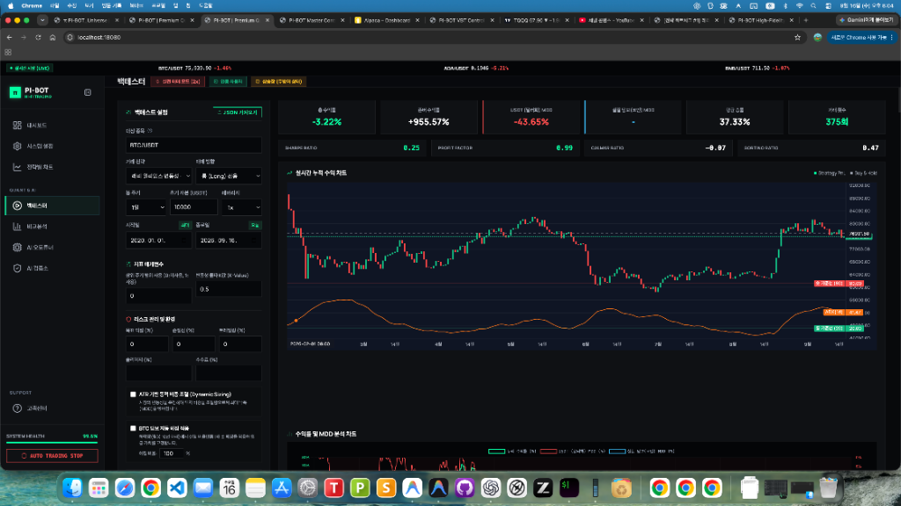

자동매매나 시스템 트레이딩에 입문하면 유튜브, 블로그, 책에서 가장 먼저 추천하는 전략이 있습니다. 바로 1987년 실전투자대회에서 1만 달러로 114만 달러(11,300%)를 벌어들인 전설적인 트레이더 래리 윌리엄스(Larry Williams)의 변동성 돌파 전략(Volatility Breakout)입니다.
전일 고가(High) - 전일 저가(Low)당일 시가 + (변동폭 × 0.5) 가격을 위로 뚫는 순간 즉시 시장가 매수수많은 인플루언서들은 "감정을 배제하고 상승 추세의 초입에 올라타 하루치 이익만 챙기고 나오는 무적의 전략"이라고 홍보합니다. 그렇다면 지난 2020년 1월 1일부터 2026년 9월 16일까지 약 6년 8개월(2,450일) 동안의 비트코인 실제 장기 차트에 이 원조 규칙을 그대로 적용했다면 내 계좌는 어떻게 되었을까요?
가공된 수치나 이론적인 가정이 아닙니다. 실제 백테스터 엔진을 통해 비트코인(BTC/USDT)의 1일봉 과거 전체 데이터를 바탕으로 시뮬레이션한 원본 결과 화면입니다.

| 검증 지표 항목 | 실측 백테스트 결과 | 지표 분석 및 의미 |
|---|---|---|
| 대상 자산 / 주기 | BTC/USDT (1일봉, 롱 전용) | 10,000 USDT 기준, 1배 레버리지 |
| 시뮬레이션 기간 | 2020.01.01 ~ 2026.09.16 | 총 2,450일 (약 6년 8개월 장기 검증) |
| 적용 전략 | 래리 윌리엄스 변동성 돌파 (K=0.5) | 상위주기 0, 익절/손절 0 (원조 룰 엄격 준수) |
| 거래 비용 조건 | 수수료 0%, 슬리피지 0% | 전략에 가장 유리하도록 비용 미차감 |
| 비트코인 단순 보유 (존버) | +955.57% | 10,000 USDT ➔ 105,557 USDT (10.5배 폭등) |
| 전략 누적 수익률 | -3.22% ❌ | 10,000 USDT ➔ 9,678 USDT (원금 손실) |
| USDT 최대 낙폭 (MDD) | -43.65% ❌ | 돈은 못 벌면서 계좌는 -43.6% 출렁임 |
| 평균 매매 승률 | 37.33% ❌ | 10번 매수하면 6~7번은 무조건 손실 |
| 총 거래 횟수 | 375회 | 약 6.5일에 1회씩 꾸준히 매매 집행 |
| 프로핏 팩터 (Profit Factor) | 0.99 ❌ | 1달러 벌 때 1.01달러 잃음 (손실 > 수익) |
| 샤프 지수 (Sharpe Ratio) | 0.25 | 무위험 채권 금리에도 한참 못 미침 |
| 칼마 비율 (Calmar Ratio) | -0.07 | 낙폭 대비 회복 탄력성 마이너스 |
차트를 보시면 녹색 점선인 비트코인 단순 보유선은 하늘을 뚫고 우상향(+955.57%)하고 있지만, 하단의 변동성 돌파 누적 수익선(녹색/적색 실선)은 지루한 우하향 박스권(-3.22%)에 갇혀 있습니다.
수수료를 단 1원도 떼지 않았음에도 원조 전략이 완전히 참패한 3가지 구조적 이유는 다음과 같습니다:
변동성 돌파는 장중 가격이 시가 + 전일변동폭*0.5를 뚫을 때 시장가로 따라붙습니다. 하지만 코인 시장은 변동성이 극심하여, 장중에 돌파가 나와서 매수 체결이 된 직후 차익실현 매물이 쏟아지며 긴 윗꼬리를 달고 시가 아래로 곤두박질치는 날이 허다합니다.
결과적으로 총 375회 거래 중 235회(62.7%)가 손실 마감이었으며, 매수할 때마다 고점에 물리는 악순환이 6년 내내 반복되었습니다.
비트코인이 대세 상승장에 진입하면 3일, 5일, 1주일 연속으로 폭발적인 장대양봉을 뽑아냅니다. 하지만 원조 전략은 "다음 날 아침 시가에 무조건 전량 매도"하므로, 하루치 수익만 먹고 포지션을 비워버립니다. 그리고 그 다음 날 더 높아진 시가 위에서 또 돌파를 기다려 비싸게 재매수하다가, 하루라도 꺾이면 고점에서 물려 그동안의 이익을 다 반납하게 됩니다.
비트코인이 몇 달 동안 방향성 없이 좁은 박스권에서 오르내릴 때, 전략은 지속적으로 돌파 매수를 시도했다가 당일 손실을 입으며 계좌를 갉아먹습니다. 그 결과 번 돈과 잃은 돈의 비율인 프로핏 팩터가 0.99로, 6년 동안 수백 번 매매를 거듭할수록 자산이 쪼그라들었습니다.
만약 여기에 실전 선물 거래소 수수료(테이커 0.05%)와 실전 체결 슬리피지(0.10%)를 반영했다면, 375회 매매를 거치는 동안 수수료로만 원금의 30~50% 이상이 증발하여 계좌는 회복 불가능한 깡통을 찼을 것입니다.
"원조 규칙(고정 K=0.5, 무필터) 그대로의 변동성 돌파는 현대 코인 시장에서 완전히 죽은 전략이다."
1980년대 미국 주식/선물 시장에서 탄생한 원조 공식은 알고리즘 봇들이 넘쳐나는 현대 가상자산 시장에서 더 이상 마법의 탄환이 아닙니다.
추세를 판별하는 장기 이평선 필터(Trend Filter), 박스권 횡보를 걸러내는 동적 이격도 보정, 그리고 변동성에 맞춰 비중을 조절하는 동적 리스크 관리가 없는 무지성 변동성 돌파는 계좌를 파멸로 이끄는 지름길임을 6년 8개월간의 실측 데이터가 명백히 증명하고 있습니다.